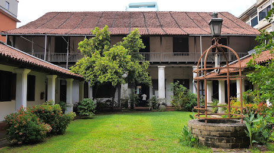
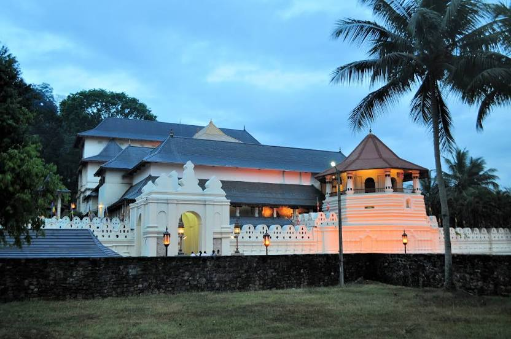

Where to go

Colombo National Museum
The National Museum of Natural History
|

Dutch Museum
Museum in a former governor's residence
|

Sri Dalada Maligawa
1595 temple with the sacred Tooth Relic
|

Adam's Peak
Mountain peak & pilgrimage site
|

Galle Dutch Fort
Historic fortress with shops & a museum
|